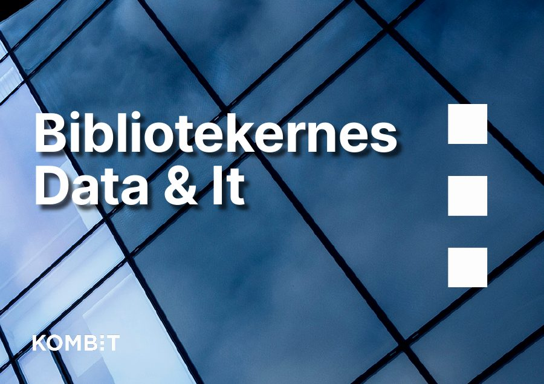

Jeg gør komplekse offentlige data lette at finde og forstå.
Jeg er multimediedesigner og afleverer min professionsbachelor i Digital Konceptudvikling 18. december 2026. Jeg arbejder med brugerresearch, informationsarkitektur og klar formidling. Her er mit bachelorprojekt og et udvalg af materialer fra KOMBIT.
Bachelorprojekt: Valg.dk som dataformidlingsplatform
Hvordan kan Valg.dk understøtte borgere, journalister, analytikere og kommunale medarbejdere gennem informationsarkitektur og præsentation af data? Projektet undersøger, hvor brugerne møder friktion, og udvikler en prototype af en ny informationsstruktur.
- Samarbejde
- KOMBIT
- Min rolle
- UX research og konceptudvikling
- Afleveres
- 18. december 2026
Discover
Interviews og observationer med brugere af Valg.dk.
Define
[Indsæt det vigtigste fund og problemforståelsen]
Develop
Koncept for ny informationsstruktur og indgange efter brugergruppe.
Deliver
Prototypen testes 11. november 2026 med kommunale medarbejdere.
Teori og metode: Garrett (UX-lag), Den Dekker (design thinking), Yablonski (Laws of UX), Houde & Hill (prototyper).
Det jeg arbejder med
Research og test
Brugerinterviews, observationer, usability-tests, personas, brugerrejser og Design Sprint.
Design og prototyping
Figma (wireframes, mockups og prototyper), informationsarkitektur, InDesign, Photoshop og Premiere Pro.
Web og data
HTML, CSS og JavaScript samt Siteimprove, GoPublic og Umbraco.
Arbejde hos KOMBIT
Plakater, produktblade og foldere fra min tid som studentermedhjælper og praktikant i kommunikationsafdelingen.


